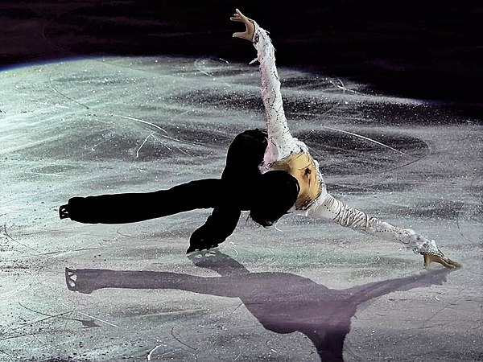
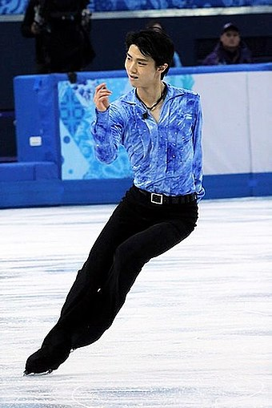
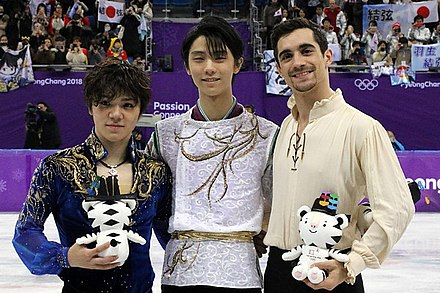
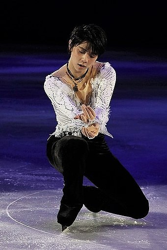

Born: December 7, 1994 (age 29) in Sendai, Miyagi, Japan
Alma mater: Waseda University (2020)
Occupations: Figure skater, Ice show producer, and directorauthor
Height: 1.72 m (5 ft 8 in)
Awards: People's Honor Award (2018), Medal of Honor (2014, 2018)
Table of Contents
Overview
Yuzuru Hanyu (羽生 結弦, Hanyū Yuzuru, Hiragana: はにゅう ゆづる; born December 7, 1994) is a Japanese figure skater and ice show producer. He is a two-time Olympic champion (2014, 2018), a two-time World champion (2014, 2017), a four-time Grand Prix Final champion (2013–2016), the 2020 Four Continents champion, the 2010 World Junior champion, the 2009–10 Junior Grand Prix Final champion, and a six-time Japanese national champion (2012–2015, 2020–2021). He has also medaled at five other World Championships, taking bronze in 2012 and 2021, and silver in 2015, 2016 and 2019, making him the only male single skater along with Jan Hoffmann to win seven world championship medals in the post-World War II era.
Having been called one of the greatest figure skaters in history by many sport writers, commentators, and skaters for his well-rounded skills, achievements, popularity, and impact on the sport, Hanyu is the first men's singles skater to achieve a Super Slam, having won all major competitions in both his senior and junior careers. He has broken world records nineteen times—the most times among single skaters since the introduction of the ISU Judging System in 2004. He is the first man to have received over 100 points in the men's short program, over 200 points in the men's free skate, and over 300 total points in competition. Upon winning his first Olympic title, Hanyu became the first Asian men's singles skater to win the Olympic gold. At nineteen years old, he was the youngest male skater to win the Olympic title since Dick Button in 1948. In 2018, he became the first man to win two consecutive Olympic gold medals since Button's back-to-back titles in 1948 and 1952. At the 2016 CS Autumn Classic International, Hanyu became the first skater in history to successfully land a quadruple loop in a competition. He is the first men's singles skater from Asia to win multiple World Championships.
In recognition of his achievements, Hanyu became the youngest recipient of the People's Honor Award, bestowed by the Prime Minister of Japan for "giving dreams and thrills to the people and hope and courage to society". He is the first figure skater to be nominated for the Laureus World Sports Award and was named the Most Valuable Skater by the inaugural ISU Skating Awards in 2020. Hanyu also has been featured in prestigious lists, such as Forbes' 30 Under 30 Asia as well as ESPN's World Fame 100 and The Dominant 20. In 2022, Hanyu was ranked sixth in the list of most-searched athletes on Google Search worldwide. The same year, on July 19, Hanyu announced his decision to turn professional and producing his own ice shows, which according to Nikkei Asia "marks the end of an era" in competitive figure skating.

Early Life
Yuzuru Hanyu was born on December 7, 1994, in Izumi ward, Sendai, Japan, as the second child to father Hidetoshi Hanyu, a junior high school teacher, and mother Yumi Hanyu, a former clerk at a department store. Hanyu's given name 結弦 (Yuzuru, lit. 'tie the bowstring') was chosen by his father, wishing that his son may "live a dignified life like a tightly drawn bowstring", symbolizing confidence, strength, and straightness. Hanyu's father was an advisor to the baseball school club and recommended the sport to his son, but Hanyu eventually decided to pursue a career in figure skating. His mother used to make the costumes in his early career, including the free skate costume for the 2010–11 season, which was designed by American figure skater Johnny Weir. In 2012, she moved with Hanyu to Toronto, Canada, and accompanied him during training, while his father and older sister, Saya, stayed in Japan.
At the age of two, Hanyu was diagnosed with asthma, a condition that gradually improved with time yet negatively affected his stamina, especially during his junior career. He began skating at the age of four at Ice Rink Sendai (formerly Konami Sports Club) in Izumi, after coach Mami Yamada had suggested he try the sport instead of being a nuisance during his sister's training. Yamada noted Hanyu's impatience when he first got onto the ice, but also praised him for his sincerity. Coaching him until the end of his second grade in elementary school, Yamada had to move to another prefecture and asked Shōichirō Tsuzuki, former coach of Japan's first World medalist, Minoru Sano, to train Hanyu and "not put his talent to waste". Hanyu described Tsuzuki's practice sessions as particularly strict and exhausting, tempting him to skip lessons at times, but he appreciated Tsuzuki's approach to build a solid foundation of skills and focus on basic training, noting: "He placed so much emphasis on skating and the Axel jump. Perhaps that made me confident to this day that the Axel is my forte."
Competitive Skating Career
Novice and junior career (2004–2010)
Hanyu competed for the first time in the 2004–05 season, winning gold at the Japan Championships in the Novice B category, the lower of the two novice level categories. His home rink then closed due to financial issues, forcing him to switch to the Katsuyama Skating Club in Aoba ward, Sendai. The same year, Shōichirō Tsuzuki moved to Yokohama, and Nanami Abe became Hanyu's main coach and choreographer, guiding him until 2012. On weekends, Hanyu travelled three hours from Sendai to Yokohama for additional lessons at Tsuzuki's new skating club. In summer 2006, at 11 years old, Hanyu's confidence showed up when initiating a spin battle against that year's Olympic silver medalist, Stéphane Lambiel, who was known for his world-class spins. Hanyu suffered a disarming defeat, which he remembered as an important career lesson: "After competing against him, I decided to improve my spins as well. You will definitely improve, learning from [the best]." In the 2006–07 season, Hanyu won the bronze medal at the Japan Championships in the Novice A category, which earned him an invitation to the Japan Junior Championships, where he placed seventh. His home rink in Izumi ward eventually reopened in 2007 after being closed for two years. The next season, he placed first at the Japan Championships in the Novice A category and won the bronze medal at the Japan Junior Championships.
In 2008–09, Hanyu moved up to junior level and made his international ISU Junior Grand Prix at the Merano Cup in Italy, where he placed fifth. The same season, he won gold at the Japan Junior Championships, becoming the youngest male skater with 13 years to win the event. This result earned him an invitation to the Japan Senior Championships for the first time, where he placed eighth. His national junior title also qualified him for the 2009 World Junior Championships in February, where he finished 12th with an ISU personal best score of 161.77 points in the combined total. In that season, Hanyu had included the triple Axel, a jump with three and a half revolutions, in his programs for the first time, though receiving negative grades of execution (GOE) for all three attempts. The following 2009–10 season marked the beginning of an 11-year-long quest for the first Super Slam in the men's singles discipline, with wins at the ISU Junior Grand Prix Final and World Junior Championships. Hanyu placed first at both of his Grand Prix assignments, in Poland and Croatia, and entered the Final as the top qualifier, which he won with a new personal best score of 206.77 points. At Junior Nationals, he successfully defended his title from the previous season, qualifying him for the Senior Nationals, where he finished sixth. Based on his results, Hanyu was selected to compete at the 2010 World Junior Championships, winning gold after placing third in the short program and first in the free skate with a new personal best score of 216.10 points. Hanyu became the fourth and youngest Japanese man to win the junior world title. In that season, he had significantly improved the quality of the triple Axel, his most difficult technical element at that time, having landed nine jumps with positive GOE in ten attempts.
2013–14 season: First Olympic and world title

For his first Olympic season, Hanyu returned to his short program "Parisienne Walkways" and selected Nino Rota's music from Romeo and Juliet for the free skate, choreographed by David Wilson. He launched the season with a win at the 2013 Finlandia Trophy and won silver in both of his Grand Prix events, the 2013 Skate Canada and Trophée Éric Bompard, qualifying him for the 2013–14 Grand Prix Final. At the Final, he set a new world record in the short program with 99.84 points and placed first overall ahead of Patrick Chan (silver) and Nobunari Oda (bronze), winning his first major international senior title. At the Japan Championships, Hanyu went on to win a second national title and was selected to represent the Japanese team at the 2014 Winter Olympics and World Championships. At the Winter Olympics in Sochi, he participated in the men's short program of the figure skating team event, earning ten points for Team Japan. In the individual event, he broke his world record, becoming the first skater to score above 100 points in the short program with a score of 101.45. Despite two falls in the free skate, he managed to win the event with a new Olympic record of 280.09 points in the combined total, finishing ahead of Patrick Chan (silver) and Denis Ten (bronze). With his win, Hanyu became the youngest gold medalist since American Dick Button in 1948. It was the first Olympic title for an Asian skater in the men's singles event and the second for Japan in figure skating, following Shizuka Arakawa's win in the women's event in 2006 in Turin. Hanyu concluded the season with a victory at the World Championships in Saitama, Japan, defeating compatriot Tatsuki Machida with 0.33 points and becoming the first skater to win the Olympics, Worlds, and the Grand Prix Final in the same season after Russian Alexei Yagudin in 2002–01.
2017–18 season: Second Olympic title
For the Olympic season, Hanyu returned to his short program Ballade No. 1 and free skate Seimei from the 2015–16 season. At the 2017 CS Autumn Classic, he scored a new world record of 112.72 points in the short program; at the Rostelecom Cup, he landed his first successful quadruple Lutz jump in international competition. However, due to mistakes, he finished second at both events behind Javier Fernández and Nathan Chen, respectively. In November, Hanyu was scheduled to compete at the NHK Trophy, but injured a lateral ligament in his right ankle after a fall on a quad Lutz in practice and was forced to withdraw from all remaining competitions of the year. At the 2018 Winter Olympics in Pyeongchang, he placed first in the short program with a new Olympic record of 111.68 points. In the free skating, he missed a jump combination and stumbled on his final triple Lutz, placing second in the segment, but it was enough to stay in first overall ahead of Shoma Uno (silver) and Javier Fernández (bronze), scoring another Olympic record of 317.85 points in the combined total. With his win, Hanyu became the first male single skater in 66 years to successfully defend his Olympic title since Dick Button in 1952. Upon the conclusion of the Olympics, Hanyu announced the quadruple Axel as his next career goal, a jump that hadn't been landed in competition until then. In order to allow his injured ankle to recover, he decided to withdraw from the World Championships, but remained first in the world standings for a fifth consecutive time at the end of the 2017–18 season.

2019–20 season: Achieving Super Slam
In 2019–20, Hanyu returned to the short program "Otoñal" and free skate Origin, and launched the new season with a solid win at the 2019 Autumn Classic. Brian Orser praised his student, noting that he has "never seen him at this time of the year to be so focused." In the Grand Prix series, Hanyu won his first gold medal at Skate Canada, scoring new personal bests of 212.99 in the free skate and 322.59 in the combined total. He placed first with a new largest victory margin of 59.82 points ahead of Nam Nguyen, improving his own record of 55.97 points from 2015. Hanyu expressed his satisfaction with the performance, feeling reaffirmed about the image of skating he was aiming for, and added: "For the first in a long time, I genuinely felt being able to win against myself." At the NHK Trophy, he captured another gold with a total score above 300 and more than 55 points ahead of silver medalist Kevin Aymoz. At the Grand Prix Final, Hanyu went into the short program without company due to a delayed arrival of his coach Ghislain Briand. In his performance, he missed a mandatory jump combination, placing second in the segment and trailing Nathan Chen by about 13 points. In the free skate, Hanyu landed five quadruple jumps in one program for the first time in his career, including his first attempt on a quad Lutz since 2017, but missed a planned triple Axel-triple Axel sequence, finishing second overall behind Chen by more than 43 points.
Competing at his first Japanese championships since the 2016–17 season, Hanyu placed first in the short program, 5.01 points ahead of Shoma Uno. Several jump errors in the free skate saw him place third in that segment, behind Uno and Yuma Kagiyama, and win the silver medal overall. It was Hanyu's first loss to Uno. Heading into the Four Continents Championships in Seoul, Hanyu opted to return to his Ballade No. 1 (Chopin) program and his "Seimei" program from prior seasons. Referencing the 2018 Winter Olympics which were held in Pyeongchang, Hanyu noted that while he wanted to win a gold medal once again in South Korea, he wanted to showcase and focus on his own style of figure skating even more. In the short program, Hanyu broke his previous world record with 111.82 points. Hanyu called it "the most perfect performance I've ever done." Despite errors on two of his quad attempts in the free skate, he won that segment as well, taking the gold medal overall with 299.42 points. Hanyu's victory on February 9, made him the first and only male singles skater to win all of the major ISU championship events at the junior and senior levels, a feat known as the Super Slam, previously only achieved by five other competitors in the other three skating disciplines. He was assigned to compete at the World Championships in Montreal, but these were canceled as a result of the coronavirus pandemic. At the ISU Skating Awards in 2020, Hanyu was nominated for Best Costume and Most Valuable Skater for the 2019–2020 season, and proceeded to win the latter.
2021–22 season: Sixth national title and third Olympics
Hanyu made his season debut at the 2021–22 Japan Figure Skating Championships, placing first in both the short program and free skate, winning his sixth Japanese National title, tying Takeshi Honda's record of most national titles in the last 50 years. He also attempted a quadruple Axel for the first time during the free skate, although it was downgraded to a triple Axel with a two-footed landing. Hanyu was assigned to represent Japan at the 2022 Winter Olympics and the 2022 World Championships.
At the 2022 Winter Olympics, Hanyu missed his opening quadruple Salchow jump in the short program due to a hole in the ice and placed eighth with 95.15 points, qualifying him for the free skate. The score was his lowest in the segment since the 2019 World Championships. In the free skate, he fell twice in his first two opening jumps, a quadruple Axel and a quad Salchow. His quad Axel attempt is the first that was not downgraded to triple Axel. Other than these two mistakes, he delivered a clean skate, placing third in the free skate and fourth place overall with a total score of 283.21 points, behind fellow Japanese compatriot and bronze medalist Shoma Uno. Following his free skate, Hanyu confirmed in a press conference that he had re-injured his right ankle in practice the day before the free skate, but since it was the Olympics and not a normal competition, he chose to compete on painkillers instead of withdrawing. On March 1, 2022, the Japan Skating Federation announced Hanyu's withdrawal from the 2022 World Championships due to the unhealed injury.
Professional Skating Career

At a press conference on July 19, 2022, Hanyu announced his decision to "step away" from competitive figure skating at amateur level and turn professional, stating that "he had achieved everything he could achieve" and would no longer "seek those kinds of evaluations." He also stated his intention to continue pursuing his "ideal skating" and dream of completing the quadruple Axel as a professional athlete. Nikkei Asia noted that Hanyu's exit from the competitive circuit "marks the end of an era". Juliet Macur of The New York Times remarked that "we may never see another skater like Yuzuru Hanyu". Numerous sports figures from and outside figure skating reacted to Hanyu's announcement with gratitude and praise, including Japanese gymnast Kōhei Uchimura, baseballer Shohei Ohtani, and tennis player Naomi Osaka.
In November and December 2022, Hanyu held his first ice show as a professional figure skater, titled Prologue, in Yokohama and Hachinohe. It was the first ever solo show event in figure skating, produced and directed by Hanyu in collaboration with choreographer Mikiko. Each show had a duration of 90 minutes and featured a selection of eight different programs from Hanyu, performed at the athletic level of skating competitions. His second solo show Gift was the first skating event to be held at the Tokyo Dome, one of Japan's largest and most prestigious entertainment venues, with a record ice show audience of 35,000 spectators. It was presented on February 26, 2023, with the dance group Elevenplay and the Tokyo Philharmonic Orchestra among the guest artists. On July 14, the show was globally distributed on the streaming platform Disney+. The Repray Tour, a sequel to Gift, is scheduled with three stops across Japan from November 2023 to February 2024, marking the first time for a solo show tour to be produced in figure skating.
In March 2023, a special commemoration event of the 2011 Tōhoku earthquake and tsunami with the title Yuzuru Hanyu Notte Stellata was held at the Sekisui Heim Super Arena in Rifu at the 12th anniversary of the disaster. The show, produced and directed by Hanyu, featured a cast of international professional skaters as well as three-time Olympic gymnastics champion Kohei Uchimura, merging the sports of figure skating and artistic gymnastics for the first time. In March 2024, the second edition of the show is scheduled to be held at the same venue at the 13th anniversary of the disaster.